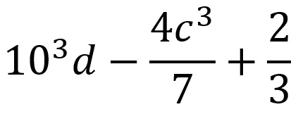

Тема 5: «Алгоритми та програми». Урок № 42. (До § 29)
Величини. Числові типи даних
Інтерактивний план-конспект уроку для 8 класу НУШ
🎯 Мета уроку
- Освітня: ознайомити учнів з поняттям величини, її характеристиками та основними числовими типами даних у Python, навчити визначати та використовувати різні типи даних у програмах.
- Розвивальна: розвивати логічне мислення, вміння аналізувати та класифікувати дані, формувати навички роботи з числовими типами даних у середовищі Python, розвивати самостійність та точність.
- Виховна: виховувати уважність, відповідальне ставлення до програмування, стимулювати інтерес до вивчення основ інформатики та алгоритмізації.
✅ Очікувані результати
Після уроку учні зможуть:
- Визначати поняття "величина" та її характеристики (ім'я, тип, значення).
- Розрізняти цілі (`int`) та дійсні (`float`) числові типи даних у Python.
- Використовувати функцію `type()` для визначення типу величини.
- Застосовувати функції `int()`, `float()`, `str()` для перетворення типів даних.
- Записувати арифметичні вирази за правилами Python.
📊 Групи результатів (НУШ)
Візуалізація важливості груп результатів для цього уроку.
Учень / учениця:
ГР1 – працює з інформацією, даними, моделями;
ГР2 – створює інформаційні продукти;
ГР3 – працює в цифровому середовищі;
ГР4 – безпечно та відповідально працює з інформаційними технологіями.
📚 Тип уроку
Урок засвоєння нових знань з елементами практичного застосування.
💻 Обладнання та ПЗ
- Персональні комп'ютери з встановленим Python.
- Середовище розробки (IDLE, VS Code).
- Проєктор або інтерактивна дошка.
🔗 Міжпредметні зв'язки
- Математика (числа, вирази, операції).
- Фізика (вимірювання величин).
ПОВТОРЮЄМО
Актуалізація опорних знань
- Який віджет використовується для введення даних користувачем у програмах `tkinter`?
- Яке призначення кнопки (`Button`) у графічному інтерфейсі?
- Що робить метод `.get()` для віджета `Entry`?
- Для чого використовується модуль `messagebox`?
- Який менеджер геометрії дозволяє розміщувати віджети у вигляді сітки (рядків і стовпців)?
- Як обробити ситуацію, коли користувач вводить невірні дані (наприклад, текст замість числа)?


Практичний блок уроку
1. Множинний вибір (Радіокнопки)
Який тип даних представляє цілі числа в Python?
2. Заповнення пропусків
Заповніть пропуски:
Для визначення типу величини в Python використовується функція
.
3. Зіставлення
Зіставте тип даних з його описом.
4. Множинний вибір (Чекбокси)
Які з наведених виразів є коректними для перетворення типів у Python? (Оберіть кілька варіантів)
Перевірка знань
Натисніть на картку, щоб побачити відповідь.
-
1. Що таке величина в програмуванні?Величина — це окремий інформаційний об’єкт (число, символ, рядок тощо), який характеризується типом і значенням, розміром пам’яті, потрібної для зберігання, назвою (ідентифікатором).
-
2. Які основні характеристики має величина?Назва (ідентифікатор), тип, значення та розмір пам’яті.
-
3. Назвіть два основні числові типи даних у Python.`int` (цілі числа) і `float` (дійсні числа).
-
4. Що означає "динамічна типізація" в Python?Це означає, що тип змінної визначається за її значенням під час присвоєння.
-
5. Які функції використовуються для перетворення типів даних на ціле, дійсне та рядкове значення?`int()` (на ціле), `float()` (на дійсне), `str()` (на рядкове).
-
6. Наведіть приклад наступного запису арифметичного виразу за правилами Python:10**3 * d - 4 * c**3 / 7 + 2 / 3
Домашнє завдання
1. Теоретична частина:
- Опрацювати § 29 (стор. 187-192).
2. Практична частина:
- Виконати із "Питання для самоперевірки" завдання № 3 (стор. 191).
3. Завдання за бажанням (для закріплення):
- Інтерактивна платформа IZZI (8 клас) до § 29: https://ua.izzi.digital/DOS/1183864/1332700.html

Додаткові матеріали
- Техніка безпеки
- Оцінювання учнів та учениць на уроках інформатики
- Підручник з інформатики для 8 класу (§ 29, стор. 187-192)
- Інтерактивна платформа IZZI (8 клас)
- Інтерактивна платформа IZZI (8 клас) до § 29: https://ua.izzi.digital/DOS/1183864/1332700.html